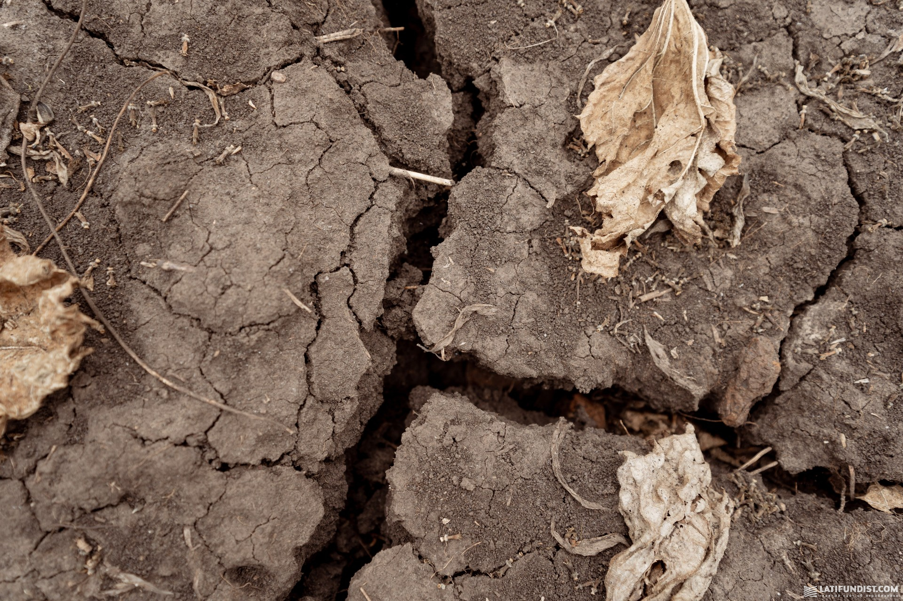
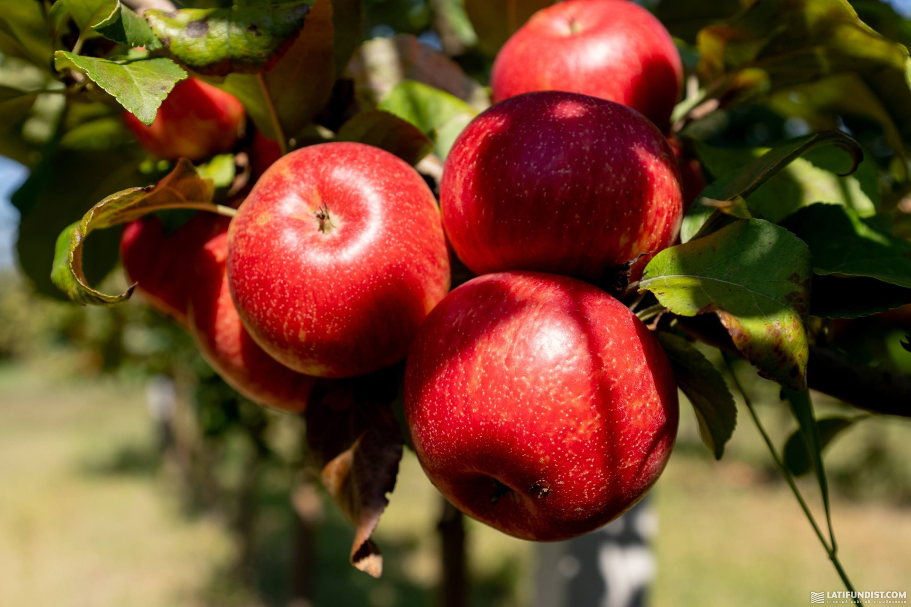
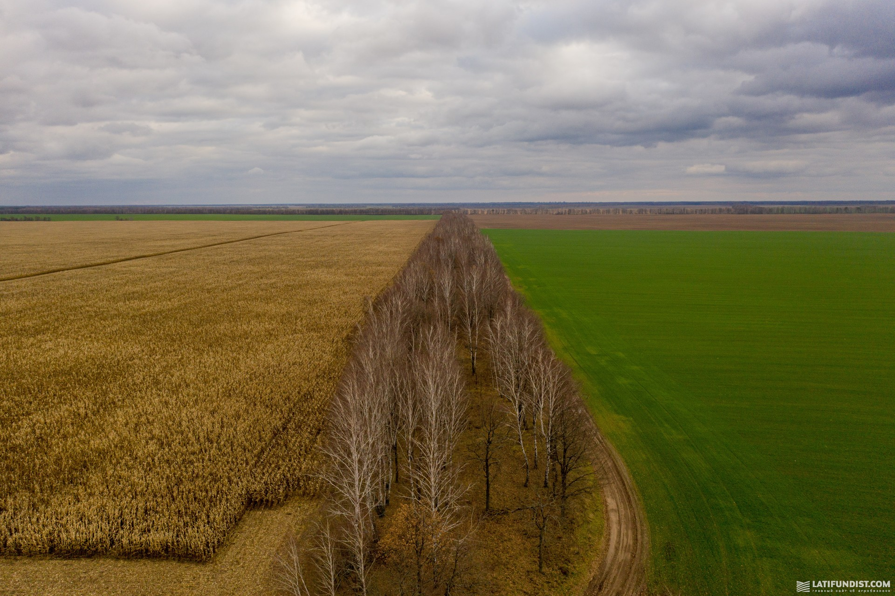
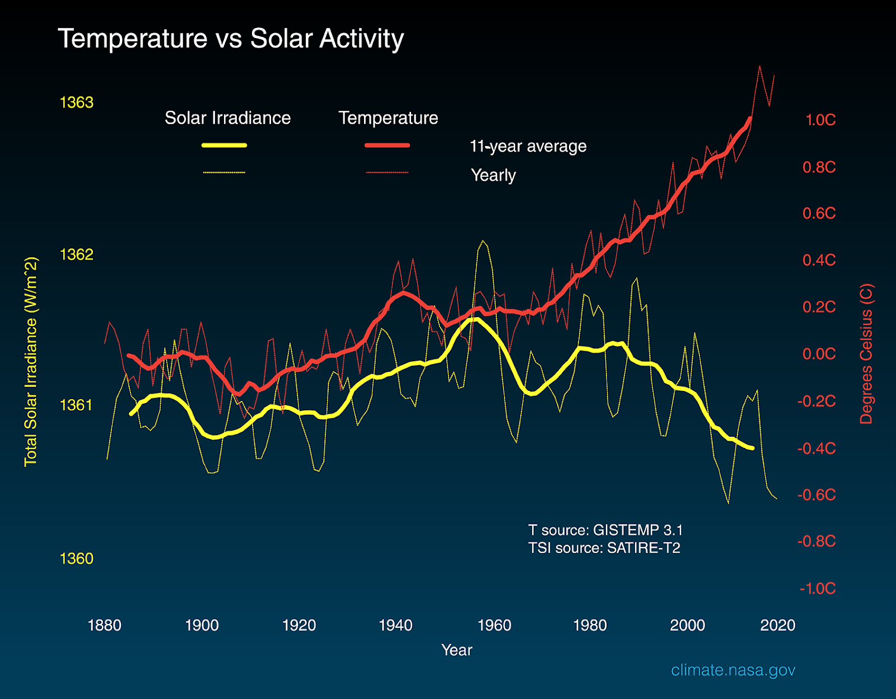

Глобальне потепління — не міф?
Найпоширеніша теорія — зміна клімату викликана глобальним потеплінням. Науковці вважають, що вже через 20
років світ може стати теплішим на 1,5°С порівняно з доіндустріальним рівнем. Кожне десятиліття вони
фіксують зростання глобальної температури Землі на 0,2°C. Це явище пояснюють збільшенням рівня парникових
газів в атмосфері, яке у свою чергу спричинене діяльністю людини: спалюванням викопних видів палива,
вирубкою лісів тощо.
Взагалі парниковий ефект є природним процесом. Коли сонячне світло потрапляє на поверхню Землі, то його
енергія поглинається і частково повертається у космос у вигляді тепла. Однак, в атмосфері нашої планети є
гази, які затримують вихід тепла. Це вуглекислий газ, метан та оксид азоту. Чим більша їхня концентрація,
тим і тепла буде більше залишатися в атмосфері. За оцінками вчених, наразі вміст цих газів в атмосфері
найбільший за останні 800 тис. років.

Читайте також:Деградовані
ґрунти, або Чому чверть земної поверхні непридатна для
землеробства
Чи виростуть банани і манго в степах України?
А що ж в Україні? Міністерство захисту довкілля та природних ресурсів із посиланням на вчених повідомило, що
через кліматичні зміни наша країна вже переходить до зони надвисоких температур і погодних катаклізмів. У
найближчі 30-40 років може відбутися опустелювання значних територій.
Ми зможемо вирощувати манго,
ананаси й банани в степах Херсонської, Миколаївської та Запорізької областей? Все може бути, адже, як
розповідав журналістам в одному з інтерв’ю керівник Укргідрометцентру
Микола
Кульбіда, глобальне потепління і викликані ним кліматичні зміни можуть призвести до
того, що в найближчі 20-25 років в Україні не буде зими.

Те, що середня річна температура в країні збільшується з року в рік, підтверджує й експертка метеосервісу
«Метео Фарм» Оксана Ящук.
«Чи варто сумніватися в існуванні глобального потепління? На мою думку, не варто, адже
цифри говорять самі за себе. Середня річна температура повітря в Україні за період 1991-2020 рр. піднялася
на 0,8-1,8°С порівняно з попередніми показниками за 30-річний період 1961-1990 рр. Ці дані
перевищують
середні показники у світі, тобто потепління на нашій території відбувається швидкими кроками. Крім того,в
Україні спостерігається майже безперервний період потепління, і впродовж всього часу середня річна
температура повітря в 65-75% випадків була вищою за норму», — пояснює Оксана Ящук.
І додає, що останнє десятиріччя було найтеплішим за весь період спостережень за погодою. Цьогорічні
показники не стали винятком. Переважний проміжок часу середні температури на2-6°С
перевищували багаторічні
норми, лише середня температура за квітень та жовтень відповідала нормі. Травень виявився прохолоднішим за
кліматичні норми майже на всій території України на 0,5-1,5°С, за винятком Донецької,
Луганської,
Запорізької та Херсонської областей.
Вересень викликав бурю емоцій своїми низькими температурними показниками, адже всі чекали «бабиного літа», а
місяць виявився досить прохолодним. Температури були нижчими від багаторічних норм на 0,2-1°С.
Однак на
Заході відповідали нормі, а в окремих областях перевищили її на 0,1-1°С.
За словами Оксани Ящук, у зв’язку з підвищенням температури дуже гостро постала проблема посухи, хоча річна
сума опадів в Україні змінилась несуттєво. В останні роки норма опадів підтримується переважно завдяки
короткочасним та інтенсивним зливам, коли за одну добу може випасти місячна норма, а то й більше
«У таких умовах починаються посухи. Навіть тоді, коли випадають дощі, сухі ґрунти не можуть
їх увібрати, адже після спеки вони втрачають властивість поглинати повною мірою вологу, по них вода може
тільки стікати. Отже, декілька дощів можуть виконати річну норму опадів, але вони не забезпечать ґрунт
потрібною вологою. Для нормального живлення потрібні затяжні, спокійні дощі. На жаль, останнім часом такі
опади стають рідким явищем. Упродовж 2021 р. жовтень виявився аномальним місяцем. Період був бездощовим та
посушливим, випала мінімальна кількість опадів», — розповідає експертка.
І зазначає, що невпинне зростання температур, посушлива ситуація сприятимуть зміні кліматичних зон України.
Можемо припустити, що кліматичні умови південного сходу України зміщуватимуться поступово на північний
захід.
Змінюється клімат — змінюється й технологія
Як аграрії пристосовуються до кліматичних змін? В агрогрупі «Агрейн»нам розповіли, що
головною проблемою є розподілення вологи в ґрунті у вегетаційний період.
І додає, що аграріям південних, східних і центральних регіонів вже зараз потрібно думати над переходом на
технології, які будуть сприяти збереженню вологи у ґрунті. Наразі в Харківській та Одеській областях
агрогрупа переходить на технологію strip-till. Планує за цією технологією обробити 4 тис. га. У подальшому
буде її використовувати в Чернігівській області.
Впродовж останніх років погодні аномалії стали звичними і для холдингу A.G.R. Group
За його словами, всі ці кліматичні виклики холдинг давно вже враховує у виробництві. Зокрема, перейшли на
безполицевий обробіток ґрунту — глибоке рихлення восени, вертикальне дискування ранньою весною на глибину не
більше 5 см (закриття вологи). Зменшили густоту посіву кукурудзи і соняшнику з метою більш економного
споживання запасів вологи. Постійно випробовують у виробничих посівах різні гібриди та аналізують їхню
пристосованість до стресових умов.

У Придніпровському кластері «Кернел» також коригують агротехнології.
Замість епілога
У 2020 р. NASA порівняла глобальні зміни температури поверхні Землі з енергією Сонця, яку отримала планета,
починаючи з 1880 р. На графіку бачимо, що кількість сонячної енергії, яку отримує Земля, із 1950 р.
зменшувалася, водночас глобальна температура помітно підвищувалася. Тому вчені NASA дійшли висновку, що
глобальне потепління, яке спостерігається вже півстоліття, спричиняють не активність Сонця і природні
кліматичні чинники, a людська діяльність.

Тарас Корнієнко заступник головного агронома «Агрейн»
«Недостатня кількість вологи в ґрунті в літні місяці призводить до неотримання частини врожаю. Північних регіонів це стосується найменше, а от для Півдня і Сходу — це, дійсно, критично. У якісь місяці опадів багато, а в якісь — посуха. Наприклад, якщо візьмемо 2020 р., то для України він був несприятливим. А на Харківщині ми збирали кукурудзу по 7 т/га при плановій врожайності 5 т/га. Інший приклад: локальний дощ у серпні (25 мм) в одному із сіл додав нам ще +3 т/га урожайності кукурудзи».